Safe Plate is an interactive website that aims to solve problems regarding food preferences and allergies when looking for a place to eat out. Users are able to search for food places and have it displayed on a map, view food places in a list view and read more about them and their Eat Safe ratings. It is developed using the React framework, and utilizes the Leaflet open API for the map search, and the Brisbane City Council API for the data about each food place.
From idea to complete product
2A - Design inspiration
The first assignment in the course was related to ideation where we were supposed to come up with a concept and design based on one or more datasets they provided us with. The result was a poster with the low fidelity design of the concept. We had to choose databases from the State Library of Queensland datasets, Australian Broadcasting Corporation (ABC) or the Brisbane City Council. During our first contact session we were presented with the different dataset we could use, and explored the different possibilities together with other students. Below, in Picture 1, the ideas me and another student came up with during this session are presented.
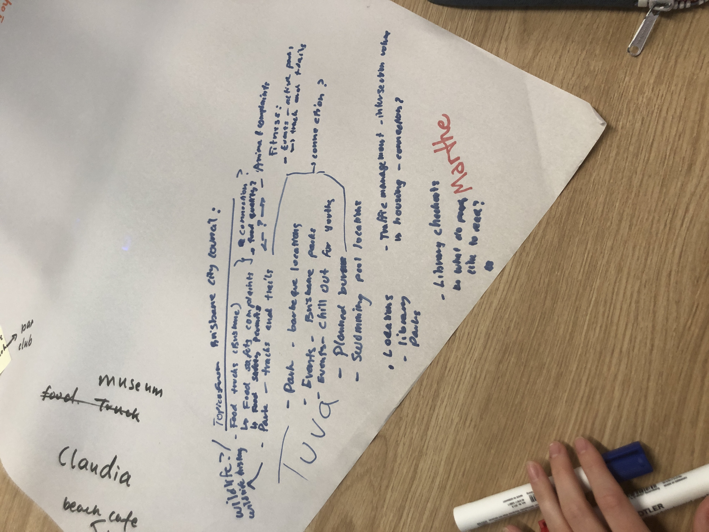
Picture 1: List view of ideas for how to use the different databases.
After brainstorming ideas for the poster I decided on using two databases from the Brisbane City Council datasets: “Parks - tracks and trails” and “Planned burns”. This was after talking with whom I had discussed the previous ideas with, to ensure we did not use the same idea, as that was not allowed. I was more interested in the other idea we had come up with, which was about food permits and an Eat Safe rating I had not seen on other platforms before. However, I was still eager to go further with my idea and started planning the design for a mobile application. I used Google maps as inspiration, as the main functionality of the application was related to map functionality. Furthermore, to make the application stand out I wanted to implement a notification system for when a planned burn was happening. After doing some research on how the system worked today, which was by following a Facebook account or through email, I wanted my application to send a notification to your phone when a planned burn was happening. This resulted in the poster presented in Piture 2 below.
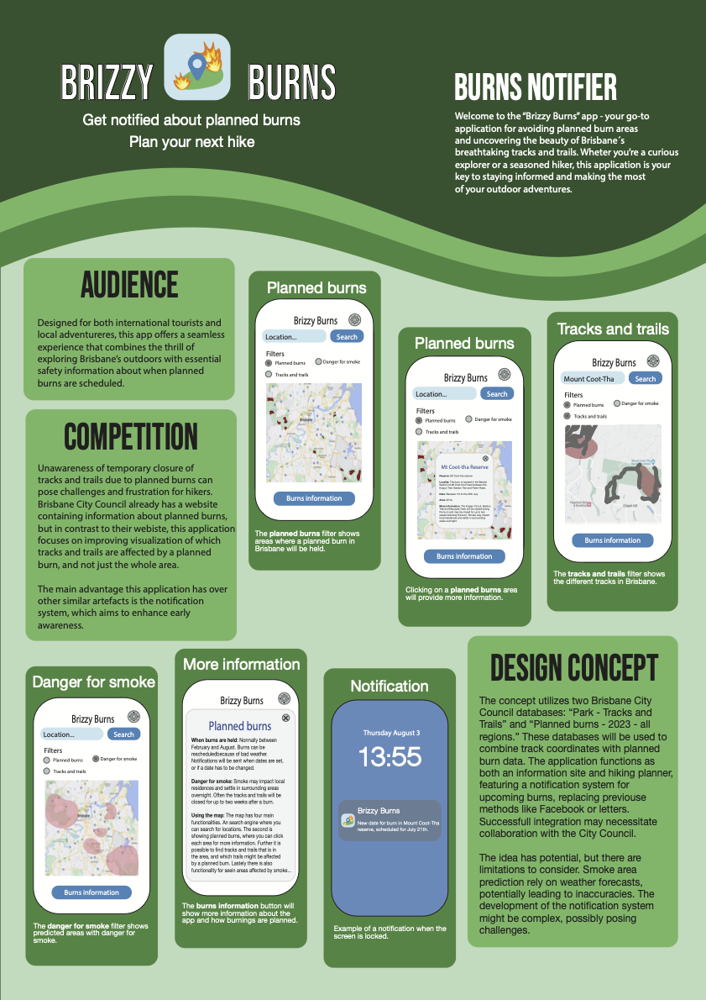
Picture 2: Final poster for the design of Brizzy Burns application.
This was the end of my individual work for this course, until the final portfolio was to be delivered.
Reflection
During this assignment I wrote in my journal for week 2 that “I am confused by why we are discussing all our ideas with other students as it was an individual assignment, and we were also not allowed to use the same ideas for our posters.” In retrospect I now realize that this was to make us think outside of the box and help each other come up with innovative concepts for our poster. Moreover, I realize that this was also a chance to start getting to know the other students taking the course, and potentially find a team and an idea you wanted to implement later in the course. When it came to making the poster I had previous experience with Adobe and Illustrator. Therefore, I did not feel that the contact session in week 2 was of any use to me, as I had already gotten further than drawing sketches on paper. The only thing that could have helped in the contact session was if I had been able to discuss my design with other students in more detail, to be able to improve it. After receiving feedback from the lecturers I realize I should have been more critical to my own work, especially related to the design choices I had made. I realize I should have looked more into how other websites solve the same problems, and how I could have improved it. I wanted to use a design I know people are familiar with for it to be simple to use, like Google maps, but I realize I could have made it more engaging so that people would want to use the website again. This could be done by having more interesting interactions when using the map, like using cool effects when the planned burn areas are placed on the map. I could also have used another database to be able to for example present historical information about each park or trail.
2B - Team charter
The next part of the course focused on forming groups and filling out a team charter. We picked teams based on which ideas (posters) we liked the most and wanted to make a website for. As I had previously wanted to make a poster of the idea with the Eat Safe rating, I wanted to join the team for making this website. After the members of the group was decided we sat down and discussed how we wanted our work environment to be, and which technologies to use, like Figma and Miro during the design process. We were eager to start the designing process and created our student accounts on Figma right away.
Reflection
During the design and implementation of our project, I realized that some parts of the team charter should have been discussed in more detail. In my journal from week 10 I wrote that one of our team members had complained about not getting enough breaks. As I am used to working for more than 4 hours straight without a break because of my previous summer internship, I had not considered this to be hard for others. Therefore, this should have been discussed when we filled out the team charter to make sure everyone would get enough breaks and felt energized while working.
2C - Design Proposal
After forming our team we quickly started performing additional research on the chosen concept and datasets. Firstly we reached out to friends and family asking them about what issues they experienced related to finding a safe place to eat. The issues was mostly related to dietary restrictions and preferences, but there were also mentions of food-poisoning. In addition to asking around about these issues, we also researched existing websites like Google Maps and the Eat Safe ratings page on the Brisbane City Council’s website. We found areas of improvement, leading us to find the main difference we wanted to implement on our website - displaying the Eat safe rating on a map and making it possible to filter on food preferences. After agreeing on the idea for our website, we started creating user stories to identify different user needs, what the website should contain and what problems it should solve. Since we were 4 people on the team, everyone created one user story each. Below, in Picture 3, you can see the user story I created.
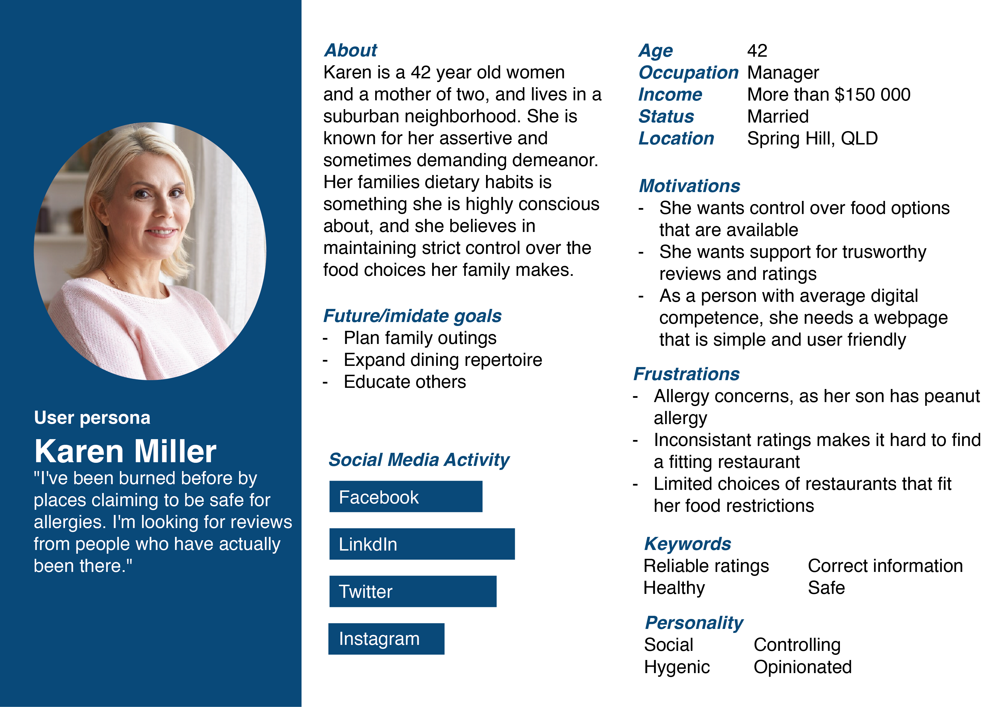
Picture 3: User story for Karen Miller.
When all user stories was created, the team had an idea of what the website should contain and the design process of the website could begin. We started by deciding to have blue as our theme color, much inspired by the color used on our user stories. Then we decided the name of the application, which was to be “Safe Plate”. As the team leader I was in charge of assigning everyone with a task they wanted to do, and we quickly decided who would design which components on the website. It ended with me being in charge of the the map search and filter options. The initial design for the pages I contributed to making are shown below, in addition to the rest of the prototype. I made these pages: Home page (Picture 4), Filter page (Picture 5), filter on Food type (Picture 6), filter on Allergy (Picture 7), filter on Eat safe rating (Picture 8) and filter on User rating (Picture 9).
My contributions
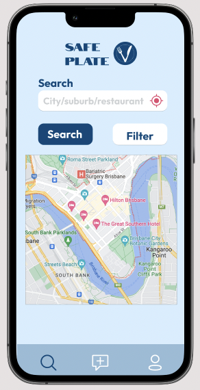
Picture 4: Home page with search.
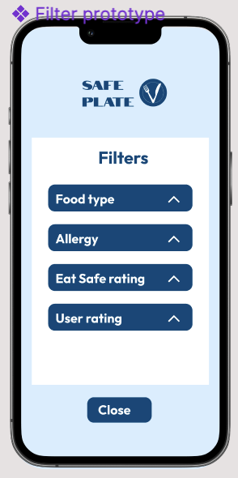
Picture 5: Filter page.
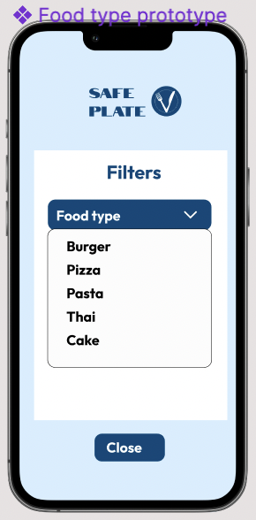
Picture 6: Filter page with Food type filter open.
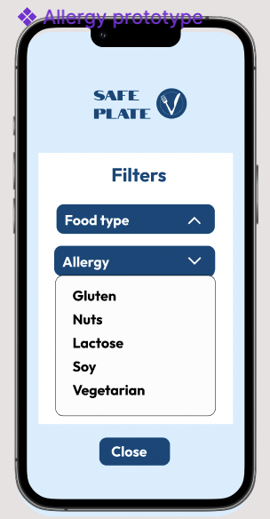
Picture 7: Filter page with Allergy filter open.
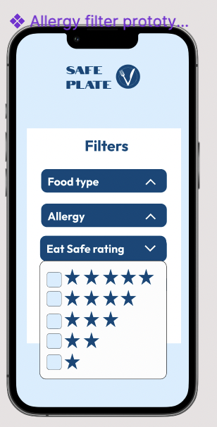
Picture 8: Filter page with Eat Safe rating filter open.
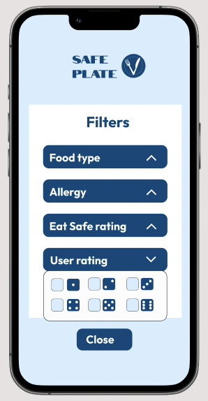
Picture 9: Filter page with User rating filter open.
The final prototype
Link to the final prototype
When the prototype was finished it was presented to the rest of our class during a contact session in week 6, and we received feedback on how to improve our initial design. We received mostly positive feedback on our design, but we could improve our visualizations of the interactions with the datasets in our prototype. Additionally, we were told that our presentation slides could have a better design. We focused on making an effort to better illustrate the use of datasets in the next iteration, as well as having a more complete theme for the presentation slides.
Reflection
During the design process I wrote in my journal that “I feel like the team is working efficiently and are communicating well.” Even though two of us was mainly in charge of implementing the website, we still contributed in making the design in Figma. It was fun to be able to contribute to the design of the website, but in afterthought this might have made the design less consistent. Since the team all worked on different parts of the design, it might have made for inconsistencies in the sense of navigation and layout. I am aware that I was the only one that used a white background for my pages, and had I discussed this more thoroughly with my team it could have been avoided. Overall, I was happy with the results of the presentation and that the initial design seemed like a good starting point.
2D - MVP
The next step in the process was to start implementing the proposed design. Early during the development process we realized that our initial design for a mobile application had to be switched with a web application because we wanted faster prototyping. This caused for a redesign of the whole website, and several pages was made even without a clear web design being made first. Apart from this the process went pretty smoothly. We made specific objectives for our website, which included: Search functionality, About page, Map, UI Design, User reviews functionality, Filter functionality and User authentication. Furthermore, we made success criteria related to these objectives, where it in essence said that the website should prevent the user from making errors, be user-friendly and engage users through the Eat Safe rating and filters. After making the objectives and success criteria we decided what should be implemented before the MVP presentation in week 9. We agreed that most of the navigation should be in place, and that the map functionality should be working by that time. User authentication and list view of the food places was moved to the next iteration.
My contributions
Implementation of About Eat Safe Rating page
Implementation of Search functionality on home page - pair programming
Implementation of Map functionality on home page - pair programming
Below, the main pages that was made for the MVP are presented. Picture 10 shows the Home page with the Search and Map functionality I contributed in making. Picture 11 the Add review page and Picture 12 the About Eat Safe Rating page that I implemented.
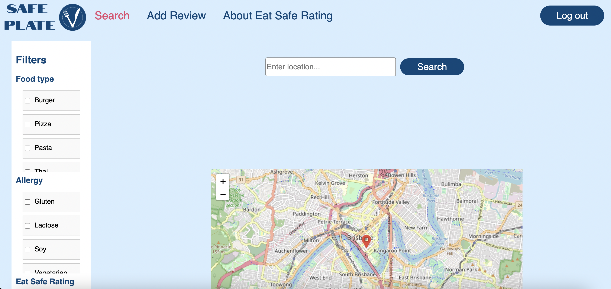
Picture 10: Home page.
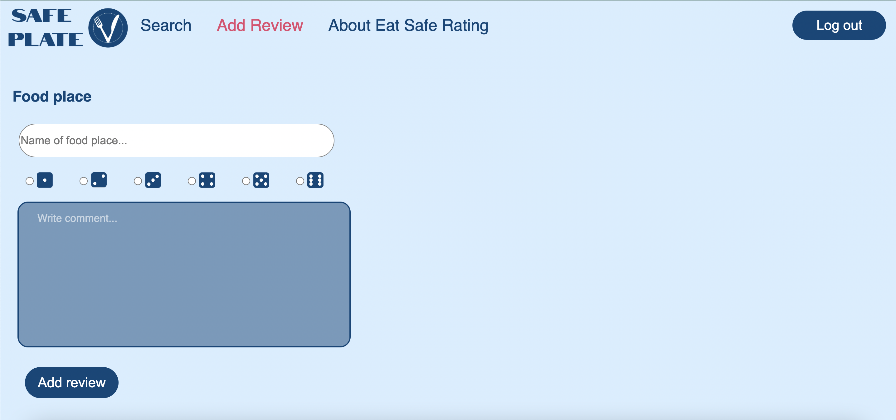
Picture 11: Add review page.
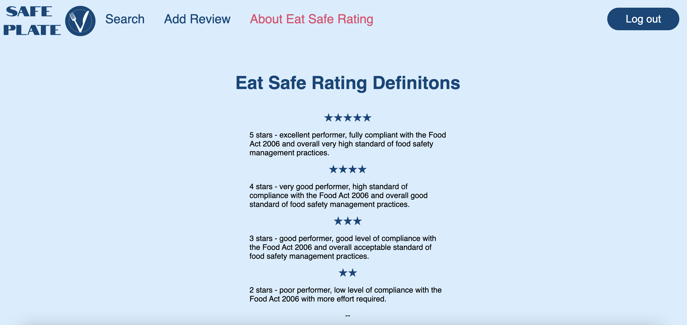
Picture 12: About Eat Safe rating page.
Reflection
Overall I feel like the implementation of the website before the MVP went well. Apart from the change from mobile app to web app we did not have to make many changes to the initial design. The navigation bar has almost the same content as the initial prototype, including Search and Add review. The Profile page was switched with the About page in the menu as user authentication and profiles was not implemented yet. The designers did not seem to stumble upon any big issues during this iteration, but me as part of the developer team faced a problem that would be the cause of bigger issues in the future. The marker that is placed on the map uses longitude and latitude, and in this iteration it used pre-defined values. This means that the map functionality did not work as intended, since the marker would not be placed again after searching for a new food place. Before the MVP presentation we could not find a solution to the problem, which resulted in the use of pre-defined values. Since the problem was not resolved before the end of the iteration, it made for a hard start on the next step, which was to finish the product.
2E - Final report and Tradeshow presentation
The last step of the process was to finish the product and present it at a tradeshow. During this iteration more problems arose, making for several big changes from the initial design. These changes included moving the filter functionality to a new page for the list view of the food places, and only displaying one marker on the map at a time. This means that the Add review from the MVP iteration was moved and replaced with the list view of all food places with filters, and the map on the home page had the filters removed from it. Furthermore, the only filter we were able to implement was the Eat Safe ratings, as the other filters would required a new database. We had tried to set up a Firebase database earlier, but was blocked by the UQ cloud. After that it would take us too much time to set up a new database for both the new filters and profile data. Apart from that the rest of the functionality was implemented as originally planned, where user authentication was added with a dummy log in page, and now a log out button that works.
My contributions
Implementation of Food Places page - pair programming (Picture 16)
Implementation of Food Place page - pair programming (Picture 17)
Implementation of filters on food place page - pair programming (Picture 16)
Implementation of marker functionality - pair programming (Picture 13 and 14)
Implementation of Dataprovider, which is a way for all data to be shared between pages. This is used for the search and map functionality, and when choosing a food place from the list view. - pair programming
Was mainly in charge of uploading the application to the UQ cloud zone through Filezilla
Contributed in making the Interaction plan, making sure the fetch calls was provided in the right place.
Contributed in writing the report, and was in charge of writing these parts:
Data sets
Simulated
Contributed to writing the text before the incidents under Discussion of design process
All of incident 1-9 under Discussion of design process
Navigation under Reflection on the final product
Search functionality under Reflection on the final product
Map and markers under Reflection on the final product
Filters under Reflection on the final product
Eat Safe ratings under Reflection on the final product
The final product
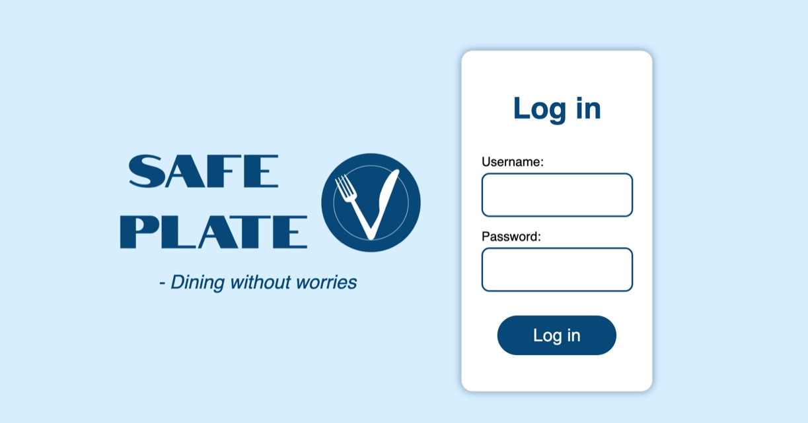
Picture 13: Log in page.
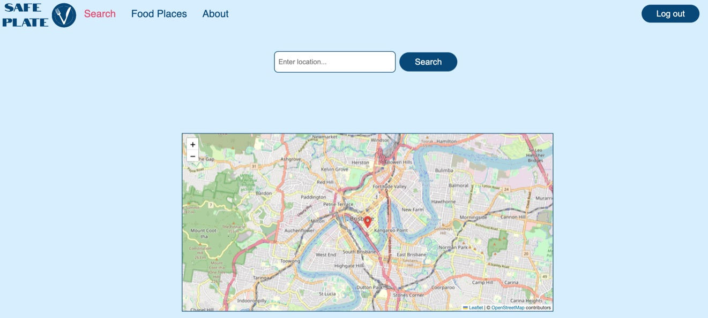
Picture 14: Home page.
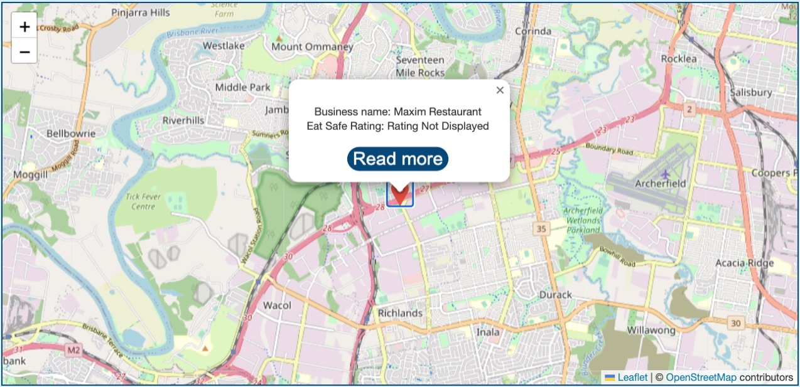
Picture 15: Map.
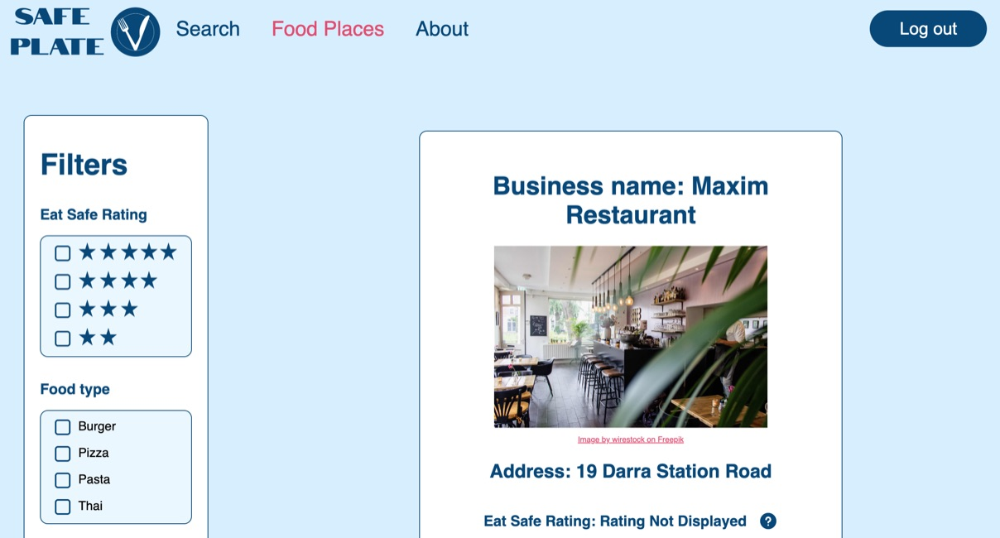
Picture 16: Food places page.
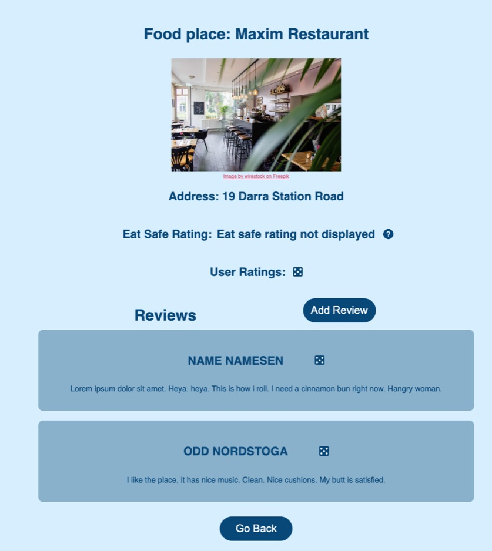
Picture 17: Food place page.
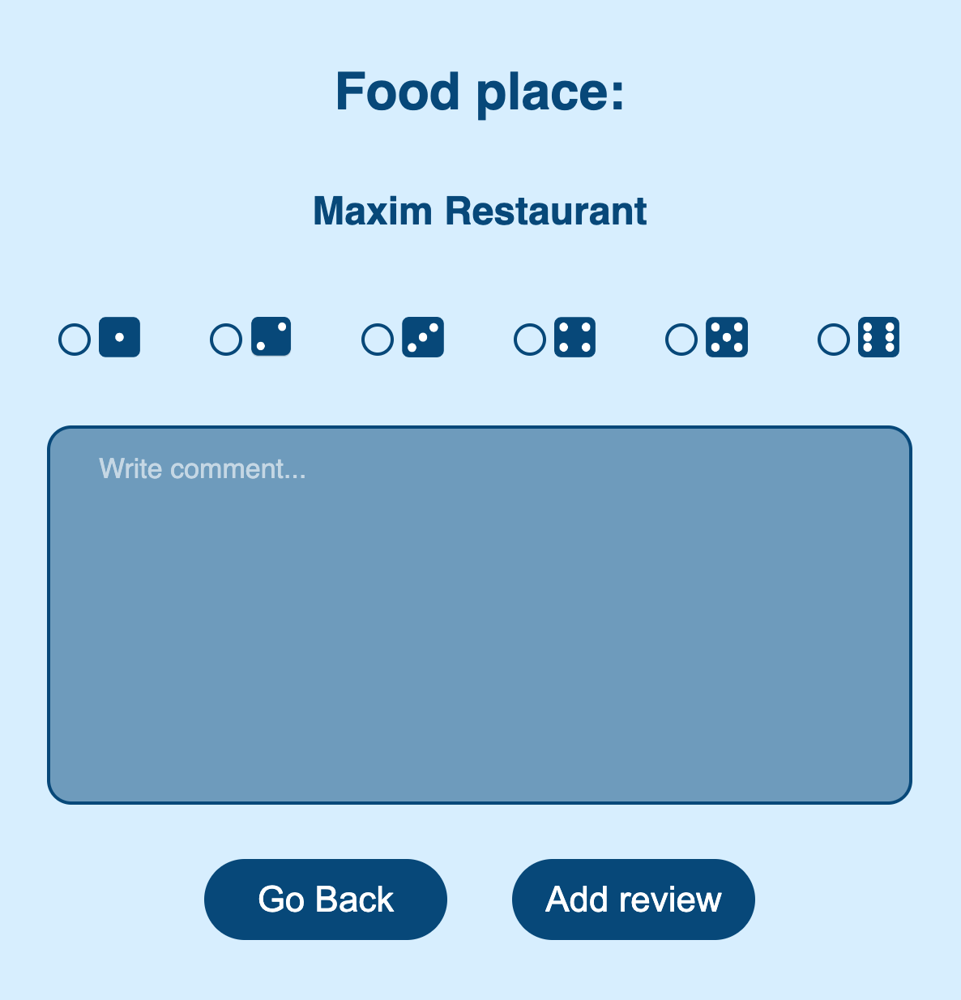
Picture 18: Add review page.
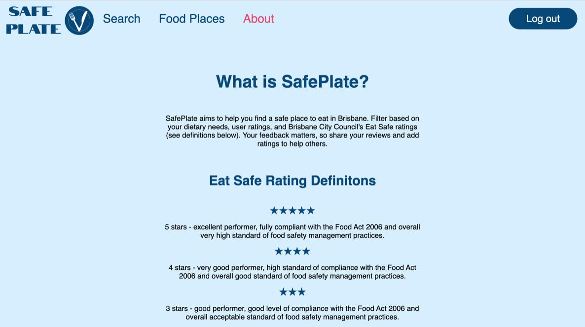
Picture 19: About page.
Problems with the cloud
A week before the tradeshow we tried to upload our application to the UQ cloud, but was not able to do so because of an unkown error. Consequently, a lot of time was lost because we tried to fix our project directory instead of finishing the remaining parts of the product. We had tried asking for help on the discussion forum of the course, but received no feedback. After trying to fix the problem ourselves for several days we went to a workshop the day before the tradeshow, and we were finally able to resolve the issue. The web application is now available at our UQ cloud, and can be accessed through the view project button. To log in you have to use the username: admin, and the password: admin321.
Tradeshow
On the day of the tradeshow we had to present a poster we had made to illustrate our design process, and to perform a demonstration of our website. The poster can be seen in Picture 20 below. During the presentation we talked about how the process from idea to final product had been, as explained earlier on this page, and also explained how user testing had helped us in discovering areas of improvement on our website. After the presentation we were so lucky to have a student check out our website, as shown in Picture 21. She seemed to enjoy the website, and told us she liked the clean and simple design.
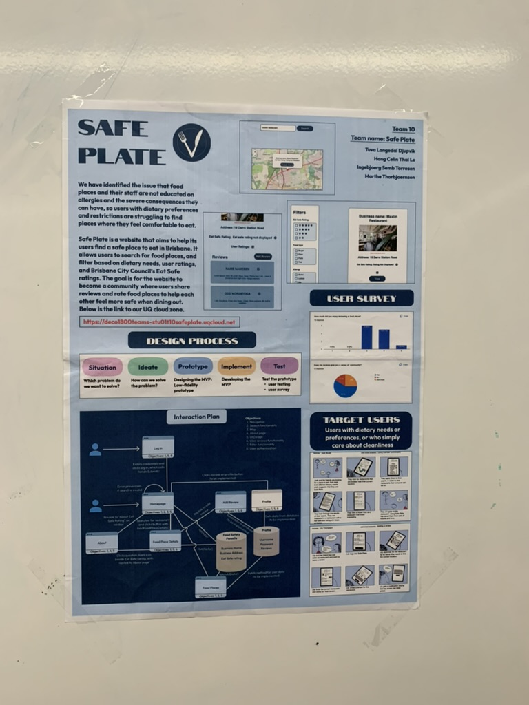
Picture 20: Final poster for Safe Plate.
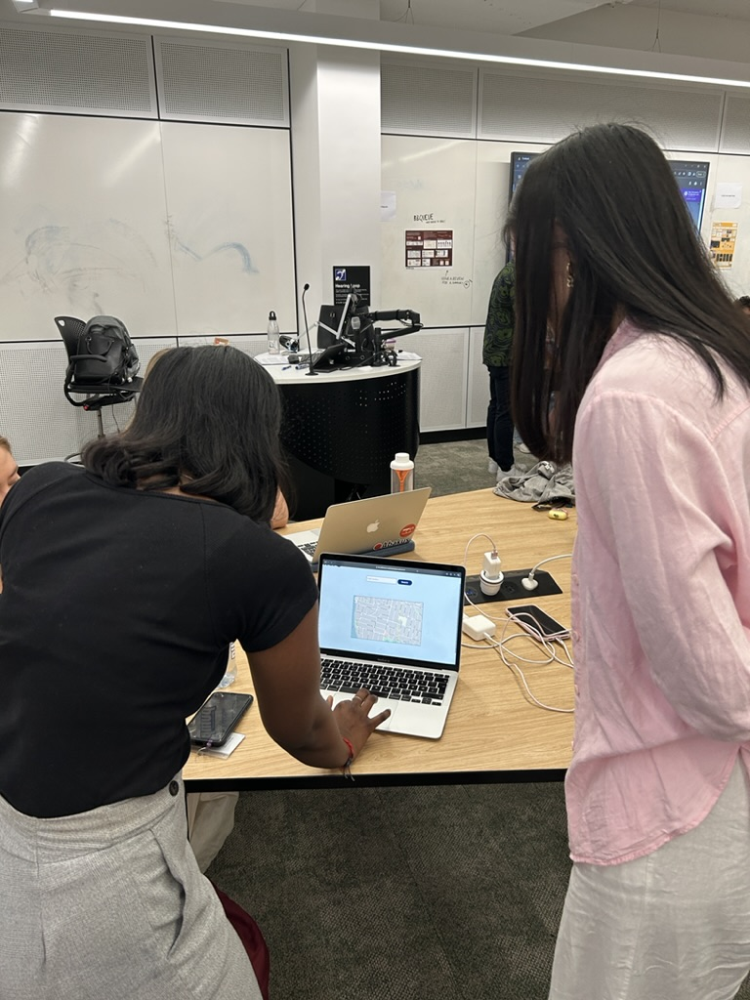
Picture 21: Student trying out our website at the tradeshow.
Feedback
The feedback we received from both staff and the other student testing our website reflected faults we were already aware of. This included usability issues with the search bar, strange behavior of the marker if the wrong search is performed and the filters not always working. For more detailed reflections on these errors, see the report provided earlier. However, everyone seemed to like the design of the website, pointing out that it was consistent throughout the whole website. This made me very happy, as we had put a lot of work into the initial design and later the redesign of the website.
Reflection
Throughout the last development iteration we experienced a lot of problems. We realized too late that most of our problems was related to our poor choice of dataset from the Brisbane City Council. This dataset did not provide data about longitude and latitude that we needed to be able to place several markers on the map at the same time. Additionally, the provided documentation for how to get the wanted data from the dataset had some faults, making it hard to use. Therefore, our choice of dataset caused for the redesign of several pages, and for the use of bad practice methods for fetching data from the chosen dataset. In retrospect the whole team should have done better research on the chosen dataset to find these deficiencies earlier, and should have either changed datasets, or found another dataset containing data about longitude and latitude to be be combined with the first one. Another thing we could have done differently was our initial solution for the filter functionality. We wanted to have our own database containing labels for food preferences and profile data, and started on a Firebase database for this reason. Later we realized that this database was blocked from the UQ cloud zone, meaning it was unusable. After this let down, it would take the team a lot of time to set up a new database that was supported by the cloud. To solve the issue we would have to simulate all the labels, which would take a lot of time, and was therefore not prioritized. As the team leader I think this was an important but difficult decision to make, since it meant that our website would loose one of its main features. Even though we did not implement all the planned features, I am still happy with how the product turned out.